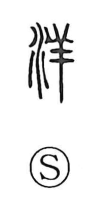

洋

Uncategorized
Kun: | On: yo
ocean ・ sea ・ foreign ・ western ・ wide ・ abundant ・ prosperous
Explanation
洋 is a phono-semantic compound: the water element 氵 sets the scene of water, while the right-side component 羊 signals the on reading yo, as in 祥. The reduplicated form 洋洋—also written 湯湯—conjures the image of water swelling and surging, and by extension an expansive, brimming, vigorous state. From this sense of breadth and abundance it naturally came to name the great waters—the sea and the ocean (as in 海洋, 外洋)—and later broadened to mean “foreign,” especially “Western,” as seen in compounds like 洋貨 and 洋楽.